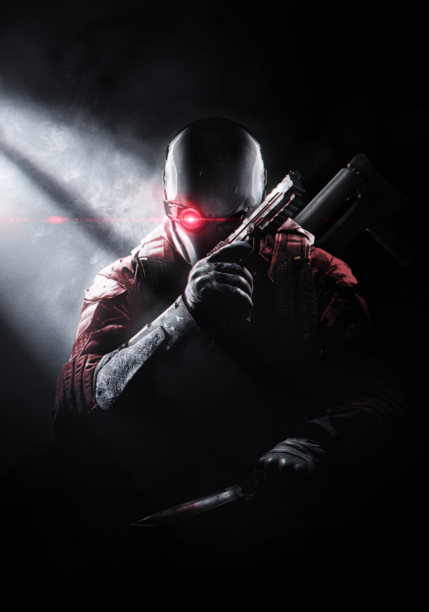
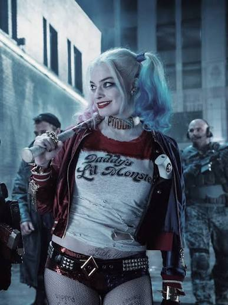
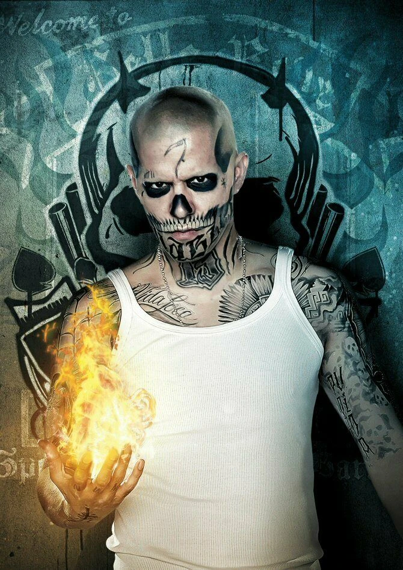
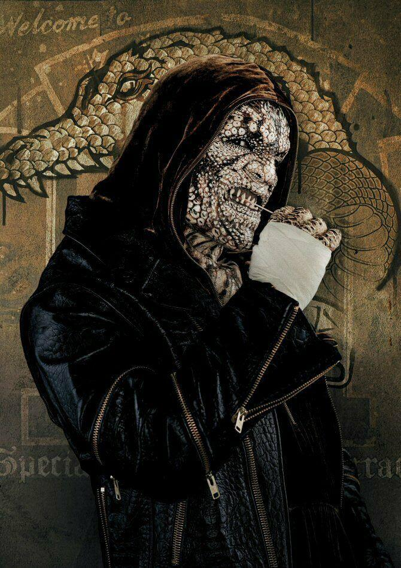
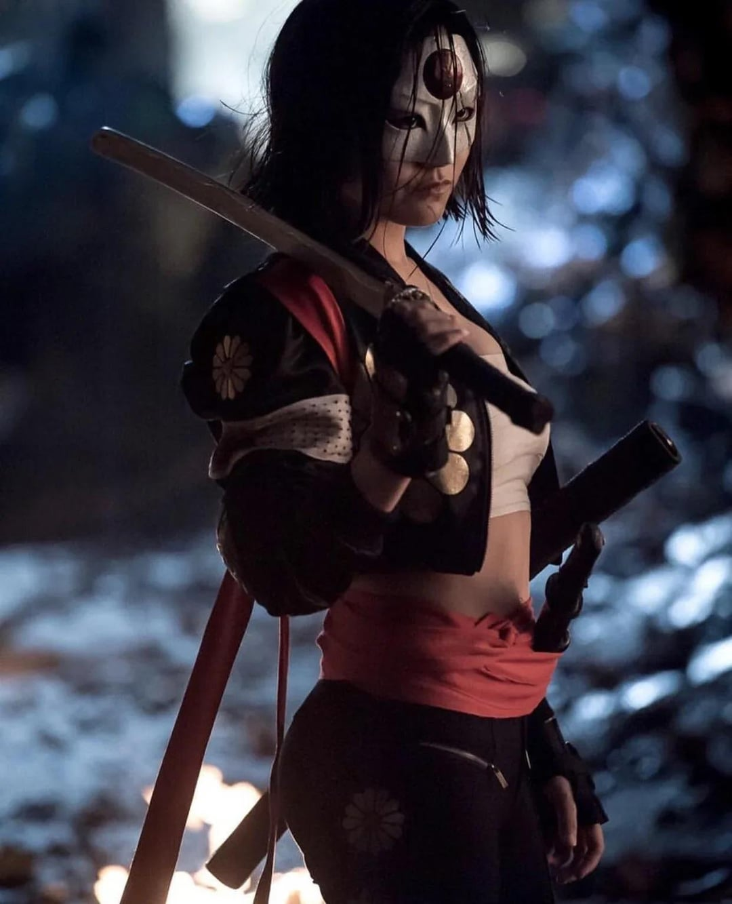

02 · Task Force X
Os condenados

Deadshot
Atirador de elite mercenário
Considerado o assassino mais preciso do mundo. Nunca erra um tiro, mas luta para ser um bom pai para a filha enquanto está preso.

Harley Quinn
Ex-psiquiatra, agora vilã imprevisível
Ex-terapeuta do Asilo Arkham que se apaixonou por um de seus pacientes e se tornou uma das criminosas mais caóticas de Gotham.

Capitão Bumerangue
Criminoso australiano
Ladrão folgado e sarcástico, especialista em armas-bumerangue e em fugir de qualquer tipo de responsabilidade.

El Diablo
Ex-líder de gangue com poder sobre o fogo
Carrega um passado trágico ligado aos próprios poderes e relutância em voltar a usá-los.

Crocodilo Assassino
Mutante com características de réptil
Força bruta do grupo, isolado da sociedade por sua aparência e temperamento agressivo.

Katana
Guerreira leal ao coronel Flag
Empunha uma espada capaz de aprisionar a alma de quem ela corta, e serve como guarda-costas de confiança da equipe.